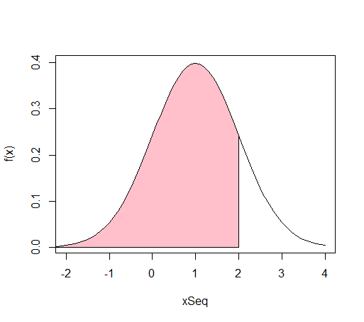
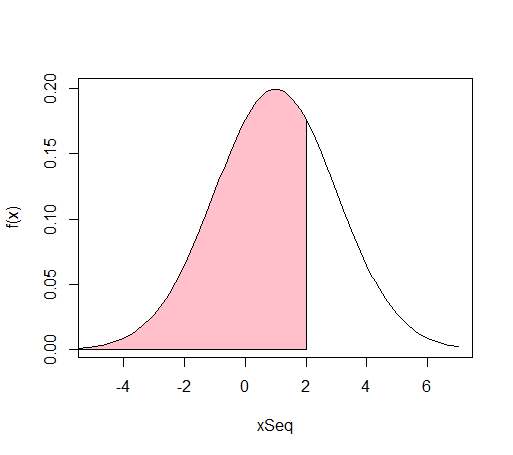
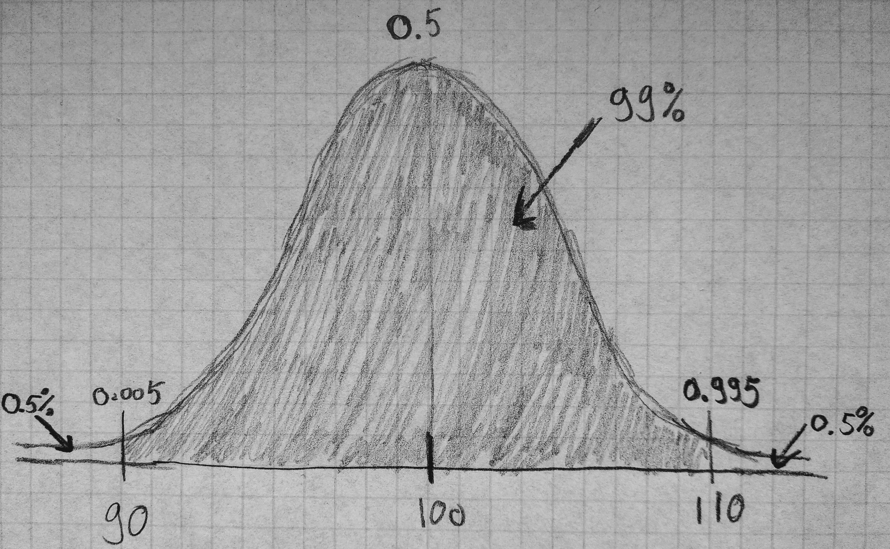

Chapter 2
Exercise 2.1
a)
- Binomial distribution is applied
- Shows the density or probability of 4 successes in 10 trails with each probability 0.6
b)
c )
- Poisson distribution
- The probability of 4 events to happen with rate 3 in given interval.
d)
Exercise 2.4
- Hypergeometric distribution
- 0 - the desired number of successes (discrepancies)
- 6 - total number of successes (discrepancies) in the population
- 14 - total number of not discrepancies
- 3 - tries without replacement
> dhyper(0,6, 14, 3)
[1] 0.3192982
Exercise 2.5
- Hypergeometric distribution
- n = 3 - draws without replacement
- a = 2 - the number of successes in the large population
- N = 20 - elements in the large population
a)
b)
The difference from a) is that in a) we picked only 3 from 20 and needed to find probability only in this amount, but here we have probability of event and number of events.
> dbinom(0,10,0.01)
[1] 0.9043821
> dbinom(0,10,0.1)
[1] 0.3486784
Exercise 2.7
Poisson distribution
a)
> dpois(5, 1.6)
[1] 0.01764199
b)
> ppois(8, 8)
[1] 0.5925473
Exercise 2.8
a)
> ppois(19, 15)
[1] 0.8752188
b)
> ppois(24:26, 15)
[1] 0.9888352 0.9938151 0.9966881
- There is 0.993 probability that there will be up to 25 calls for a randomly selected period of 5 minutes. Therefore the capacity should be 25 calls per 5 minutes.
Exercise 2.9
a)
-
Normal distribution
-
pnorm(2)showscdffor standard normal distribution: $$ Z \sim N(0,1) \ \text{,where } \mu = 0 , \sigma^2 = 1\ F(2) = 0.9772 $$

pnorm(2,1,1)showscdffor X:

- pnorm(2,1,2) shows cdf for Y:
$$ Y \sim N(1,4)\ \text{,where } \mu = 1 , \sigma^2 = 4\ F(2) = 0.6915 $$ 
b)
What is the result of the following command:
qnorm(pnorm(2))?
pnorm gives "a distance" up to F(2), which is 0.9772499. We can use "that distance" in qnorm function to find a value again, which is 2. (See Figure 2.2 in the book for more)
> pnorm(2)
[1] 0.9772499
> qnorm(pnorm(2))
[1] 2
c)
State what the numbers represent in the three cases.
- First case
qnorm(0.975)
[1] 1.96
- Second case
qnorm(0.975,1,1)
[1] 2.96

- Third case
qnorm(0.975,1,2)
[1] 4.92

2.10 The normal pdf
a)
Which of the following statements regarding the probability density function of the normal distribution N(1, 2^2) is false?
- The total area under the curve is equal to 1.0
- The mean is equal to 1^2
The variance is equal to 2. Variance is equal to 4, because standard deviation is equal to 2:
- The curve is symmetric about the mean.
- The two tails of the curve extend indefinitely.
b)
Let X be normally distributed with mean 24 and variance 16. Calculate the following probabilities:
> pnorm(20, mean=24, sd=sqrt(16) )
[1] 0.1586553
> 1 - pnorm(29.5, mean=24, sd=sqrt(16) )
[1] 0.08456572
> dnorm(23.8, mean=24, sd=sqrt(16))
[1] 0.09961098
2.11 Computer chip control
A machine for checking computer chips uses on average 65 milliseconds per check with a standard deviation of 4 milliseconds. A newer machine, potentially to be bought, uses on average 54 milliseconds per check with a standard deviation of 3 milliseconds. It can be used that check times can be assumed normally distributed and independent.
a)
What is the probability that the time savings per check using the new machine is less than 10 milliseconds is?
By theorem 2.40 and example 2.41:
> pnorm(10, 11,sqrt(25))
[1] 0.4207403
b)
What is the mean and standard deviation for the total time use for checking 100 chips on the new machine is?
By theorem 2.56:
2.12 Concrete items
A manufacturer of concrete items knows that the length (L) of his items are reasonably normally distributed with muL = 3000 mm and sigmaL = 3 mm. The requirement for these elements is that the length should be not more than 3007 mm and the length must be at least 2993 mm.
a)
The expected error rate in the manufacturing will be?
- The expected error rate is the probability of manufacturing an item shorter than 2993 and longer than 3007, so:
> pnorm(3007,mean=3000, sd=sqrt(9))
[1] 0.9901847
> pnorm(2993,mean=3000, sd=sqrt(9))
[1] 0.009815329
b)
The concrete items are supported by beams, where the distance between the beams is called Lbeam and can be assumed normal distributed. The concrete items length is still called L. For the items to be supported correctly, the following requirements for these lengths must be fulfilled: 90mm < L - Lbeam < 110 mm. It is assumed that the mean of the distance between the beams is mbeam = 2900 mm. How large may the standard deviation sigmabeam of the distance between the beams be if you want the requirement fulfilled in 99% of the cases?
- Find:
- Needs be fulfilled:
- We know:
- We can draw a graph like this, because 99% of all distances should between 90 and 110. So there is only 0.5% left in each side, that the 0.005 quantile is at 90 and the 0.995 quantile is at 110:

- We can also write this like following:
- We can use theorem 2.43 in order to find a standard deviation of the distance, because the value of the standardized normal random variable at 0.005 quantile should be equal to the transformed distance variable:
- And the same at 0.995 quantile:
- We choose the second equation:
> qnorm(0.995)
[1] 2.575829
- So the result is: